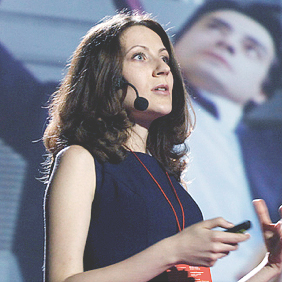
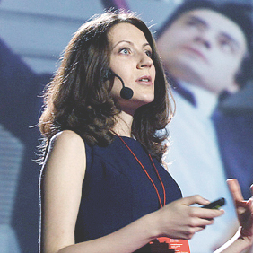
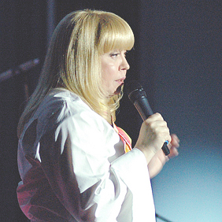
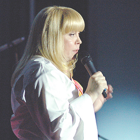

- 2009.
- 2010.
- 2011.
- 2012.
- 2013.
20 травня 2012 TEDxKyiv 2012. ТАЛАНТИ. ОСВІТА. РОЗВИТОК.
-


Олексій ГрєковПеревинаходячи школу
-


Іван МалковичРозвиток таланту
-


Alexei KapterevWord-class Self-education
-


Євген ПенцакЯкою повинна бути добра освіта?
-


Наталя ШульгаВід наївності до свідомості
-


Дмитро ДзюбаМайбутнє нейронних мереж
-


Анатолій БондаренкоЖурналістика даних
-
 

Марія БашликВибір для наших дітей
-


Ігор СкляревськийМіська навігація
-
 

Лілія МлинаричФеномен фестивалю